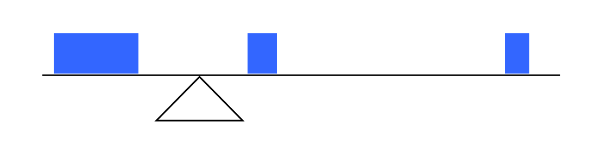
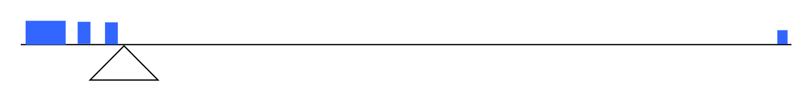

It is often desirable to use a few numbers to summarize a distribution. One important aspect of a distribution is where its center is located. Measures of central tendency are discussed first. A second aspect of a distribution is how spread out it is. In other words, how much the data in the distribution vary from one another. The next section describes measures of variability.
Let's begin by trying to find the most "typical" value of a data set.
Note that we just used the word "typical" although in many cases you might think of using the word "average." We need to be careful with the word "average" as it means different things to different people in different contexts. One of the most common uses of the word "average" is what mathematicians and statisticians call the arithmetic mean, or just plain old mean for short. "Arithmetic mean" sounds rather fancy, but you have likely calculated a mean many times without realizing it; the mean is what most people think of when they use the word "average".
Definition7.2.1.Mean.
The mean of a set of data is the sum of the data values divided by the number of values.
Example7.2.2.
Marci’s exam scores for her last math class were: 79, 86, 82, 94. What is the mean of those values?
Adding these values, we get 634 total TDs. Dividing by 31, the number of data values, we get \(\frac{634}{31}=20.4516\text{.}\) It would be appropriate to round this to 20.5.
It would be most correct for us to report that “The mean number of touchdown passes thrown in the NFL in the 2000 season was 20.5 passes,” but it is not uncommon to see the more casual word “average” used in place of "mean"
Problem7.2.4.Try It Now.
The price of a jar of peanut butter at 5 stores was: $3.29, $3.59, $3.79, $3.75, and $3.99. Find the mean price.
Adding the prices and dividing by 5 we get the mean price: $3.682
Example7.2.5.
The one hundred families in a particular neighborhood are asked their annual household income, to the nearest $5 thousand dollars. The results are summarized in a frequency table below. Find the mean annual household income.
We could calculate this more easily by noticing that adding 15 to itself six times is the same as \(15\cdot 6=90\text{.}\) Using this simplification, we get
The mean household income of our sample is 33.9 thousand dollars ($33,900).
Example7.2.7.
Extending off the last example, suppose a new family moves into the neighborhood example that has a household income of $5 million ($5000 thousand). What is the mean household income?
While 83.1 thousand dollars ($83,069) is the correct mean household income, it no longer represents a “typical” value.
Imagine the data values on a see-saw or balance scale. The mean is the value that keeps the data in balance, like in the picture below.

If we graph our household data, the $5 million data value is so far out to the right that the mean has to adjust up to keep things in balance.

For this reason, when working with data that have outliers - values far outside the primary grouping - it is common to use a different measure of center, the median.
Definition7.2.8.Median.
The median is the value separating the higher half of a dataset from the lower lower half of the dataset.
To find the median, begin by listing the data in order from smallest to largest, or largest to smallest.
If the number of data values, \(N\text{,}\) is odd, then the median is the middle data value. This value can be found by rounding \(\frac{N}{2}\) up to the next whole number.
If the number of data values is even, there is no one middle value, so we find the mean of the two middle values (values \(\frac{N}{2}\) and \(\frac{N}{2}+1\)).
Example7.2.9.
Returning to the football touchdown data, we would start by listing the data in order. Luckily, it was already in decreasing order, so we can work with it without needing to reorder it first.
Since there are 31 data values, an odd number, the median will be the middle number, the 16th data value (\(\frac{31}{2} = 15.5\)), round up to 16, leaving 15 values below and 15 above). The 16th data value is 20, so the median number of touchdown passes in the 2000 season was 20 passes. Notice that for this data, the median is fairly close to the mean we calculated earlier, 20.5.
Example7.2.10.
Find the median of these quiz scores: 5 10 8 6 4 8 2 5 7 7
We start by listing the data in order: 2 4 5 5 6 7 7 8 8 10
Since there are 10 data values, an even number, there is no one middle number. So we find the mean of the two middle numbers, 6 and 7, and get \(\frac{6+7}{2}=6.5\)
The median quiz score was 6.5.
Problem7.2.11.Try It Now.
The price of a jar of peanut butter at 5 stores were: $3.29, $3.59, $3.79, $3.75, and $3.99. Find the median price.
Here we have 100 data values. If we didn’t already know that, we could find it by adding the frequencies. Since 100 is an even number, we need to find the mean of the middle two data values - the 50th and 51st data values.
To find these, we can assign a number to each of the data values based on its position. The first 6 values are $15, so values 1 - 6 are $15 thousand. The next 8 data values are $20 thousand. \(8 + 6 = 14\text{,}\) so values 7 - 14 are $20 thousand. The rest is summarized in the table:
Table7.2.14.
Income (thousands of dollars)
Frequency
Values
15
6
1 - 6
20
8
7 - (6 + 8) = 7 - 14
25
11
15 - (14 + 11) = 15 - 25
30
17
26 - (25 + 17) = 26 - 42
35
19
43 - (42 + 19) = 43 - 61
40
20
62 - (61 + 20) = 62 - 81
45
12
82 - (81 + 12) = 82 - 93
50
7
94 - (93 + 7) = 94 - 100
From this we can tell that values 50 and 51 will be $35 thousand, and the mean of these two values is $35 thousand. The median income in this neighborhood is $35 thousand.
Example7.2.15.
If we add in the new neighbor with a $5 million household income, then there will be 101 data values, and the 51st value will be the median. As we discovered in the last example, the 51st value is $35 thousand. Notice that the new neighbor did not affect the median in this case. The median is not swayed as much by outliers as the mean is.
In addition to the mean and the median, there is one other common measurement of the "typical" value of a data set: the mode.
Definition7.2.16.Mode.
The mode is the element of the data set that occurs most frequently.
The mode is fairly useless with data like weights or heights where there are a large number of possible values. The mode is most commonly used for categorical data, for which median and mean cannot be computed.
Example7.2.17.
In our vehicle color survey, we collected the data
Table7.2.18.
Color
Frequency
Blue
3
Green
5
Red
4
White
3
Black
2
Grey
3
For this data, Green is the mode, since it is the data value that occurred the most frequently.
It is possible for a data set to have more than one mode if several categories have the same frequency, or no modes if each every category occurs only once.
Problem7.2.19.Try It Now.
Reviewers were asked to rate a product on a scale of 1 to 5. Find
The mean is \(\frac{1\cdot 4+2 \cdot 8+3 \cdot 7+4 \cdot 3+5 \cdot 1}{23} = 2.5\)
There are 23 data values, so the median will be the 12th data value. Ratings of 1 are the first 4 values, while a rating of 2 are the next 8 values, so the 12th value will be a rating of 2. The median is 2.
The mode is the most frequent rating. The mode rating is 2.